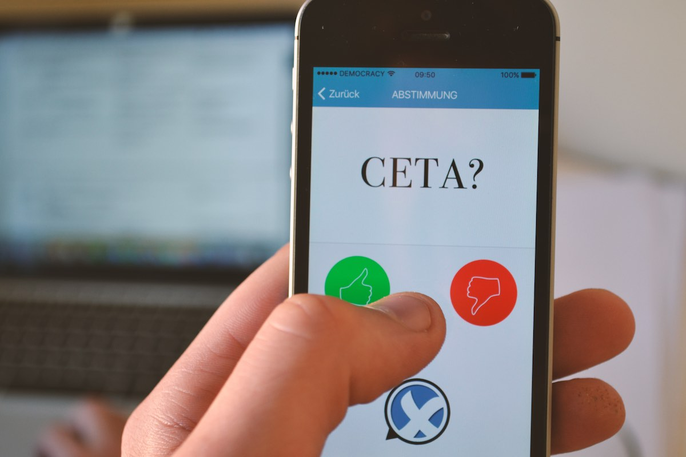

<!-- single -->
<div class="single">
  <div class="container">
    <div class="agileits-single-img">
      
      
      <h4>CETA ist das Freihandelsabkommen mit Kanada. Stimme darüber ab, ob der Bundestag CETA zustimmen oder ablehnen soll.</h4>
      <div class="agileinfo-single-icons">
        <ul>
          <li><a href="#"><i class="fa fa-user" aria-hidden="true"></i> <span>Marius Krüger</span></a></li>
          <li><i class="fa fa-calendar" aria-hidden="true"></i><span>07.Nov.2017</span></li>
        </ul>
      </div>
      <p>"CETA ist das TTIP für Kanada. Ziel des Abkommens ist die Förderung des Freihandels, also des Verkehrs von Waren, Dienstleistungen und Kapitals, zwischen der EU und Kanada durch den Abbau von Handelshemmnissen.</p>
      <p>Dem Verständnis der CETA-Architekten nach, stellen insbesondere soziale, ökologische und kulturelle gesetzliche Schutzstandards solche Hemmnisse dar, und müssen im Interesse des Freihandels abgebaut werden. Mit der Einrichtung eines Investor-Staat-Schiedsmechanismus schafft CETA darüber hinaus für Unternehmen die Voraussetzungen, Staaten die durch ihr gesetzgeberisches Wirken ihre Gewinne beeinträchtigen, vor nichtstaatlichen Privatgerichten auf Entschädigung zu verklagen.</p>
      <p>Es ist zu befürchten, dass die Demokratie so zur reinen Fassade verkommt, was unser Grundgesetz ausschließt.“ &mdash; <em>Marianne Grimmenstein</em></p>
      <p>Trotzdem wurde CETA vom Deutschen Bundestag am 22.09.16 ratifiziert und dessen vorläufigen Anwendung beschlossen (vgl. <a href="https://www.bundestag.de/parlament/plenum/abstimmung/abstimmung?id=418">Bundestagsdrucksache 18/9663</a>)</p>
      
      <h5>Was wir dagegen tun können?</h5>
      <p>DEMOCRACY ist der Versuch, unsere Bürgerinteressen deutlich und pragmatisch gegenüber unseren Abgeordneten zu vertreten. Warum nicht eine gemeinnützige Plattform aufbauen, die alle Bürgerinnen und Bürger, unabhängig von Ort, Zeit und Alter zu diesem Zweck verbindet.</p>
      <p>Technisch gesehen, haben wir dazu alle Möglichkeiten in der Hand.<br>
        Die App DEMOCRACY ist der Vorschlag, diese zu nutzen.<br>
        Entscheide DU.</p>
      
      <a href="http://startnext.com/democracy" class="call_to_action">
        Unterstütze unser Projekt auf<br>
        
      </a>
      
    </div>
    
  </div>
</div>
<!-- //single -->
